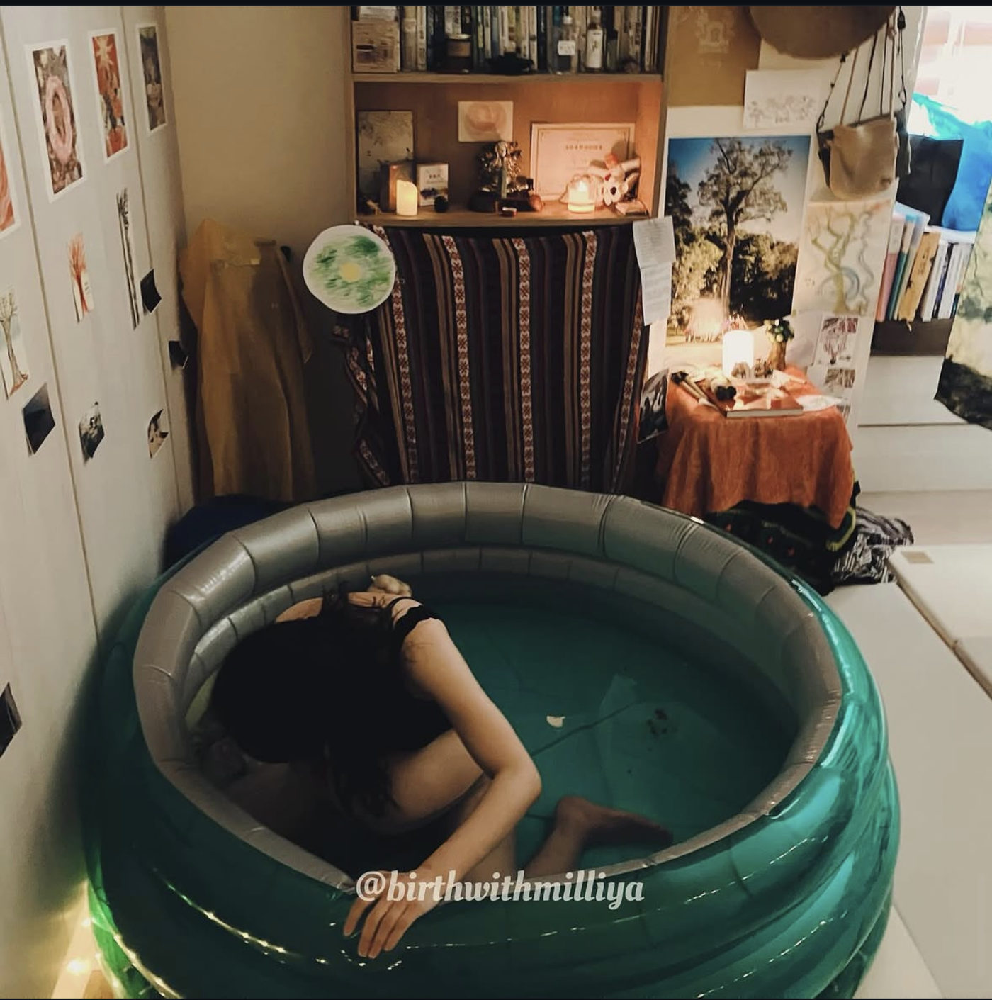
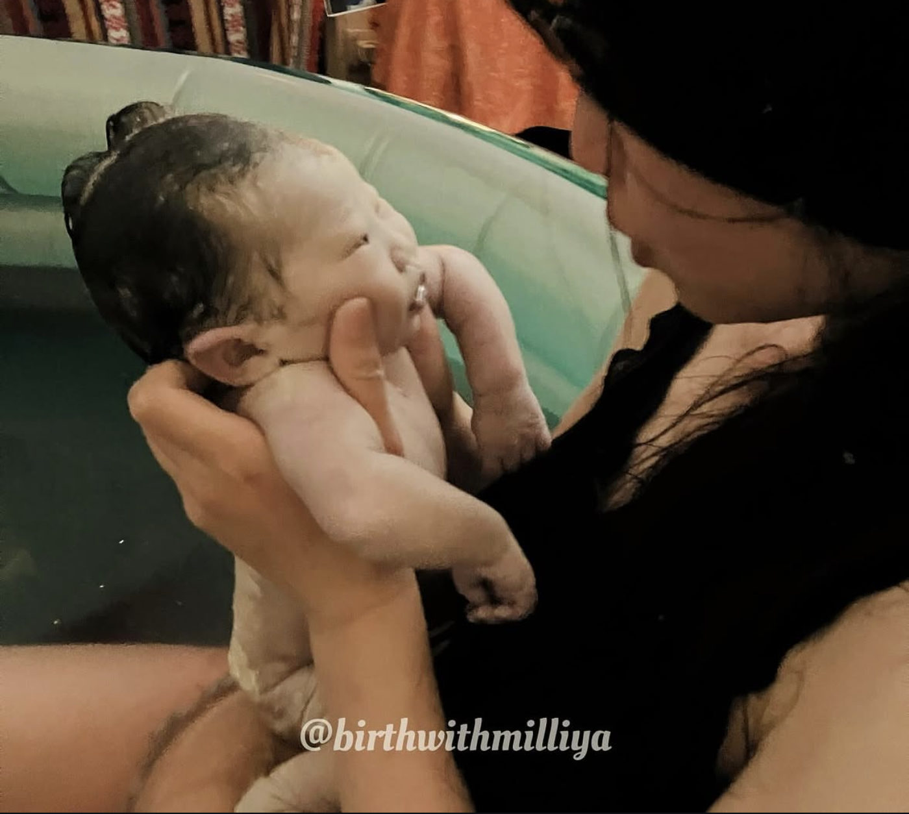

台湾では、水中出産はまだ珍しいお産です。
理由は設備だと思われがちです。プールが高い、部屋が狭い、病院が投資したがらない。設備が関係しているのは確かです。ただ、台湾で何年もお産に立ち会ってきて感じるのは、もっと見つけにくいのは、水中出産に慣れた人だということです。
この見方には研究の裏づけがあります。台湾では、あまり書かれていないと思います。
どこでできるか。私たちがまとめた台湾の出産ガイドでは、水中出産の実施が確認できた施設は 3 か所でした。公的な一覧は存在しないため、これがすべてではありません。パンフレットやブログで水中出産に触れている病院でも、いまは行っていないことがあります。直接問い合わせて確かめてください。
言葉。この先の 16 の質問は、お互いが正確に理解し合えてはじめて役に立ちます。水温の上限、プールから出てもらう条件、緊急時の対応。書面の運用基準があれば見せてもらい、通訳か、日本語がわかるドゥーラに同席してもらってください。私は中国語・英語・日本語で対応しています。
まず、2 つの言葉を分けます
議論の出発点であり、いちばん飛ばされやすいところです。
| 水中陣痛 water immersion |
陣痛の間はプールで過ごし、生まれる直前に水から上がって、陸上で出産します。痛みの緩和については、根拠が比較的はっきりしています。 |
|---|---|
| 水中出産 waterbirth |
赤ちゃんが水中で生まれます。研究は新しく数も少なく、議論が集まっているのはこちらです。 |
話がかみ合わない原因は、片方が水中陣痛を、もう片方が水中出産を想像していることにあります。医療チームと話すときは、最初に「いま話しているのは、どちらですか？」と確認してください。

プールは空気で膨らますタイプで、部屋はご本人が整えました。｜撮影：Milliya
メリット：数字はほぼ同じ方向を向いています
査読あり 2024 年に AJOG に載った系統的レビューとメタ分析は、52 件の研究をまとめています。陸上の出産と比べて、水中出産には次のような関連がありました。
| 項目 | 方向 | 対象 |
|---|---|---|
| 産後出血 | ↓ 約 20%（OR 0.80、CI 0.68–0.94） | 21 件、149,732 妊娠 |
| 新生児の誤嚥で蘇生が必要 | ↓ 約 40%（OR 0.60、CI 0.43–0.84） | 19 件、181,001 妊娠 |
| 新生児の感染 | ↓ 約 36%（OR 0.64、CI 0.42–0.97） | 15 件、53,635 妊娠 |
| アプガースコア低値 | ↓ 約 31%（OR 0.69、CI 0.58–0.82） | 21 件、165,917 妊娠 |
| NICU 入院 | ↓ 約 44%（OR 0.56、CI 0.45–0.70） | 30 件、287,698 妊娠 |
| 産婦の感染 | 差なし（OR 0.93、CI 0.76–1.14） | 10 件、113,395 妊娠 |
査読あり 単独の研究でいちばん大きいのは、Bovbjerg らの研究（2022 年、BJOG）です。傾向スコアマッチングで、水中出産 17,530 件と陸上出産 17,530 件を、80 以上の変数をそろえて比べました。対象はアメリカで自宅や助産所で行われたローリスクのお産です。産後 6 週間以内の入院は、お母さん（aOR 0.87）も赤ちゃん（aOR 0.95）も少ない結果でした。新生児死亡も多くありません（aOR 0.56、CI 0.31–1.0）。著者たちはこの結果を、水中出産は一部のガイドラインが言うほど有害ではなく、推進派が言うほど無害でもない、とまとめています。
エビデンスの限界 ここにあるエビデンスはほとんどが観察研究で、ランダム化試験ではありません。Evidence Based Birth は、構造的な偏りを指摘しています。陣痛中に問題が出た人はプールから出ることになるため、「水中出産」のグループには、元気な赤ちゃんが残りやすくなります。その分、水中出産がよく見えてしまう可能性があります。
痛みについては、Evidence Based Birth が紹介している小さなランダム化試験があります。痛みが「思っていたより軽かった」と答えた人は、水中出産のグループで 57%、陸上のグループで 28% でした。ただし同サイトは、この種の試験は規模が小さく、グループ間の入れ替わりも多かったと注記しています。確かな結論ではなく、ひとつの手がかりとして読んでください。
よくある 5 つの思い込み
健康な正期産の新生児には潜水反射があり、水中では呼吸を始めません。大事な条件は 3 つあります。水温が体温に近いこと（熱すぎると水中で呼吸を始めることがあります）、水中で完全に生まれた赤ちゃんを顔を上に向けて、すぐに静かに水面へ上げること、そして顔が空気に触れたら、二度と水に戻さないことです。
研究では、水中出産のグループのほうが、新生児の誤嚥で蘇生が必要になる割合は低くなっていました。
空気で膨らますプールは、新品か、使う前に十分に消毒したものであれば使えます。私が読んだガイドラインは、これに専用の使い捨てライナーを組み合わせ、お産のたびに捨てるとしています。使い回して十分に消毒していないレジャー用プールは向きません。
ガイドライン さらに大切なのは、循環配管や加熱ポンプのあるスパ型の浴槽は、絶対に使わないことです。その配管は、レジオネラ菌や緑膿菌が繁殖しやすい場所です。
ガイドライン 分娩第 1 期は心地よさを基準にしますが、37.5°C を超えないこと。第 2・第 3 期は 37.0–37.5°C に保ちます。
測るのは水温だけではありません。お母さんの体温も 1 時間ごとに測ります。基準より 1°C 上がったら入水をやめます。お母さんが熱を持つと赤ちゃんの体温も上がり、胎児の心拍が速くなったり、水中で呼吸を始めてしまったりすることがあります。
査読あり Bovbjerg の研究では、水中出産のグループで子宮の感染がわずかに多く（aOR 1.25、CI 1.05–1.48）、ただし入院の増加にはつながっていません。2024 年のメタ分析では、新生児の感染はむしろ低く、産婦の感染は差がありませんでした。
前提は、徹底した清掃・消毒とスタッフの防護です。水に入るかどうかより、感染対策がどれだけ行われているかのほうが、リスクを左右します。
水は痛みをやわらげ、リラックスを助け、楽な姿勢を見つけやすくしてくれます。麻酔ではありません。
痛みのない出産の代わりと考えると、期待と現実の差が大きくなります。変わるのは痛みとの関係で、痛みそのものは残ります。
唯一、はっきり増えるリスク
すべての数字を並べてみると、ほとんどが良い方向を向いています。例外は 1 つです。
査読あり 臍帯断裂（cord avulsion）。出産の途中でへその緒が切れてしまうことです。Bovbjerg の研究では調整オッズ比 1.57（CI 1.37–1.82）、2024 年のメタ分析では統合オッズ比 1.75（CI 1.38–2.24）でした。絶対的な割合では、水中出産で 0.57%、陸上出産で 0.37%、1 万件あたり約 20 件の差です。
仕組みは単純です。赤ちゃんを水面に上げるのが速すぎる。そこに、へその緒が短いことが重なる。
サイン：水の色がたちまち濃い赤になる、「パチン」という音がする、へその緒の張りが急になくなる。
対応：赤ちゃん側のへその緒をすぐにクランプします。すぐに気づいてクランプすれば、多くは後遺症なく対処できます。Sidebottom らが引用するレビューでは、長期的な後遺症の報告はありませんでした。Bovbjerg のデータでは断裂の例で死亡はなく、Sidebottom らが報告した例でも有害な転帰はありませんでした。ただし軽いものではありません。同論文が引く別のレビューでは、断裂のおよそ 4 分の 1 が NICU 入院に、約 8 分の 1 が輸血に至ると推定されています。
「すぐに気づく」ためには、その場に何を見ればいいかを知っている人がいなければなりません。
手順を変えたあとの経過を追った研究があります
査読あり Sidebottom らの研究（2020 年、Obstetrics & Gynecology）は、アメリカの 8 つの病院が対象です。分娩第 2 期に水中にいた 384 件のうち、臍帯断裂は 0.8%（3/384）、マッチさせた対照群では 0 件でした。この差は統計的に有意ではありません。
大事なのは時期です。3 件はすべて 2014 年、研究の最初の年に起きました。2 件は水中で、1 件は、お母さんがへその緒を切る前に赤ちゃんを抱いてベッドへ運ぼうとしたときでした。そこで病院は教育を変えました。へその緒はプールから出る前に切る。赤ちゃんの状態が安定していれば、パートナーが抱きます。
研究期間の残り 4 年間に、臍帯断裂は 1 件も起きなかった。—— Sidebottom ら、2020、Obstetrics & Gynecology（論文の記述を要約）
出典：Sidebottom AC ら（2020）Obstetrics & Gynecology 136(4):707-715、全文。
エビデンスの限界 特定の介助方法と臍帯断裂の発生率を、ランダム化試験で直接比べた研究はありません。「ゆっくり水面へ上げる」「へその緒を引っぱらない」「プールを出る前に切る」といった助言は、臨床上のコンセンサスと症例の検討の段階にとどまり、実証された結論ではありません。
Sidebottom らの研究も、同じ病院群での前後比較で、ランダム化はしていません。説得力はありますが、因果関係までは示せません。手順を変えるきっかけとして書かれているのも 3 例のうち 1 例なので、その後のゼロは心強い結果ではあっても、証明ではありません。
ここに線を引くのは、このあとの話が大事な内容だからです。大事なことは、足場がしっかりしていて初めて力を持ちます。
なぜ「付き添う人が慣れているか」が安全の問題なのか
私が繰り返し感じていることがあります。台湾でも日本でも、助産師や医師は水中出産に、口にしにくい緊張を持っていることが多いということです。反対しているというより、経験がないのです。
現地研究なし これは私の実務上の観察です。台湾と日本には、この点を扱った研究を見つけられませんでした。ただ、国際的な文献は同じ方向を指しています。
査読あり 22 件の研究を対象にした 2024 年のレビューによると、水中出産をいちばん支持するのは助産師、次が看護師で、支持する医師は少数でした。反対の理由には、トレーニング不足、同僚の支持が得られないこと、業務の効率、安全性と訴訟への懸念が挙がっています（Chua ら、2024、Journal of Advanced Nursing）。
トレーニング不足が、最初に挙がっています。
査読ありカナダ北部オンタリオの調査（Orrantia と Petrick、2021 年）も同じ方向です。女性 362 人のうち 81.8% が水中出産は安全だと答え、調査した助産師は 100% が安全と答えました。一方、産科医は 0% でした。ただし産科医の人数は非常に少なく、信頼区間は広くなっています。
出典：Ulfsdottir H ら（2020）Women and Birth 33(2):186-192。
慎重になる医療者の事情
ある数字を知って、この問題の見え方が変わりました。
査読あり 西オーストラリアの高次医療病院にあるバースセンターで、助産師を対象にした調査（Lewis ら、2018）があります。研修を受けたあと、回答した 29 人のうち 93%（27 人）が水中出産を支える準備ができたと感じていました。そして、自信を持てるまでに必要だった水中出産の件数は、平均 7 件でした。1 つの施設での小さな調査なので、目安として読んでください。
7 件です。
水中出産がもともと少ない場所では、助産師が 7 件を重ねるのに何年もかかるかもしれません。これは私の推測です。だから、7 件に届く前の人が緊張するのは、経験の少なさに対する正直な反応です。
だから私は、「水中出産をしますか？」と聞くより、こう聞くことをすすめます。
これまでに何件、立ち会いましたか？
準備すること
ガイドライン あまり知られていないことがあります。国際的には、水中出産だけを対象にした上位のガイドラインはありません。ACOG、RCOG、RCM が示しているのは原則です。センチ単位、分単位まで書かれた運用の規範は、イギリス各地の NHS 病院の臨床ガイドラインにあります。以下の多くはその文書に拠っていて、出典と年を示します。内容が食い違うところは並べて書きます。
プール
- 水深に決まった数字はありません。ガイドラインの書き方は「座った姿勢で水面が胸骨の下端まで」「乳頭の高さまで、お腹が完全に浸かる」。深さの基準は、あなたの体です。
- 空気で膨らますプールは、新品か十分に消毒したものであれば使えます。ガイドラインでは通常、専用の使い捨てライナーを併用し、お産のたびに捨てます。
- 循環配管や加熱ポンプのあるスパ型の浴槽は使いません。
- 固定式のプールは、注水の前に蛇口を流して配管を洗い流します（施設により 2〜4 分間）。3 日以上使っていなければ 1 分間。自宅出産では新品か使い捨てのホースを使います。
- 水は出産が近づいてから張ります。長く溜めたままにしません。
水温とモニタリング
| 第 1 期の水温 | 心地よさを基準に、37.5°C 以下 |
|---|---|
| 第 2・第 3 期の水温 | 37.0–37.5°C |
| 水温の測定 | 第 1 期は1 時間ごと、第 2 期は 15 分ごと（30 分ごとの施設もあります）。プールの中央をかき混ぜて測ります |
| お母さんの体温 | 1 時間ごと。1°C 上がったら中止。37.5°C 超が 2 回、または 38°C 以上が 1 回で、水から出ます |
| 胎児の心拍 | 防水ドップラーまたは無線テレメトリー。第 2 期は 5 分ごと、収縮のあとすぐに少なくとも 1 分間聴きます。15 分ごとにお母さんの脈も触れて、母と胎児の心拍を区別します |
| 室温 | 23–24°C |
向いている人、向かない人
青信号：37–42 週、単胎、頭位で固定している、自然に陣痛が始まった、羊水が澄んでいる、活動期、胎児心拍 110–160 bpm、バイタルが正常、BMI 35 未満、皮膚に傷がない、自分でプールに出入りできる。
赤信号：重い内科疾患、血液を介するウイルス感染、前置胎盤、骨盤位、多胎、早産または過期産、胎便混濁のある羊水、発熱、活動性のヘルペス、オピオイド系鎮痛薬の投与から 2–3 時間以内、または眠気がある、行動が大きく制限されている。硬膜外麻酔をしている場合は対象外です。
黄信号（個別に評価）：BMI 35 以上、GBS 陽性は入水できます。点滴の抗菌薬は入水前でも水中でも投与でき、ルートのある手は手袋で覆って水の外に出しておきます、3 度裂傷の既往、血栓のリスク、誘発分娩、産後出血の高リスク、前回の肩甲難産。
ガイドライン 前回帝王切開（VBAC）は、ガイドライン間の食い違いがいちばん大きい項目です。分娩室のみ、無線の胎児モニター、CTG が正常という条件で認める施設もあり、多くは対象の一覧に入れていません。この項目は、必ず 1 つずつ話し合ってください。
水から出る条件
ここが安全の中心です。ガイドラインに明記された条件は 10 項目を超えます。
- 体温が 37.5°C を 2 回超える（または 38°C 以上）
- 血圧 140/90 が 30 分あけて 2 回、または 150/110 が 1 回
- 脈拍が 100 bpm を超え続ける
- 胎児心拍の異常、減速、またはよく聴き取れない
- 胎便混濁のある羊水
- 出血や血のかたまり
- お産の進みが止まる
- 笑気ガス（Entonox）以外の鎮痛、筋肉注射、会陰切開が必要になる
- 赤ちゃんの頭が水面に出て空気に触れたあと（再び水に入れない）
- 1 回いきんでも生まれてこない
- 第 3 期の出血が多い、または積極的な処置が必要（多くのガイドラインはオキシトシンを水の外か、プールを出てから投与するよう定めています。ウェールズのあるガイドラインは水中での投与も認め、注射のときは脚を水の外に出します）
生まれるときの技術的なポイント
- ハンズオフ：声かけを中心に、水中の赤ちゃんには触れません。触れる刺激が呼吸を始めさせることがあるためです。
- へその緒を引っぱりません。赤ちゃんは水中で完全に生まれてから、顔を上に向けて、静かに、すぐに水面へ上げます。
- 水から出した赤ちゃんを、水に戻してはいけません。顔が空気に触れた時点で呼吸が始まります。これはご家族に事前に伝えておいてください。善意で「水のほうが気持ちよさそうだから戻してあげたい」と言う人がいるからです。
- 臍帯クランプを遅らせる場合：水中でクランプも切断もしません（呼吸を刺激します）。赤ちゃんを胸に抱いてへその緒をつないだまま、拍動が止まったら水から出て処置します。
- 実務上の注意：水中では出血量を見積もれません。「500 mL に達していない／超えている」という記録だけになり、お母さんの状態で判断することになります。
緊急のとき、どうやって私を水から出しますか？
水温や費用はよく聞かれますが、救出について尋ねる人はほとんどいません。ところがガイドラインの書き方は一様ではありません。ウェールズのある手順は、助産師、母親の体を返す補助者、ストレッチャーを用意する人、救出ネットを敷く 2 人の、少なくとも 5 人の動きを描いています。私が読んだガイドラインに共通する原則は、専用の救出ネットとボードで水平に運び出すこと、そしてプールの水は抜かないことです。浮力が、人を持ち上げる助けになるからです。
同じウェールズのガイドラインは、水中でのお産には医療者が理想的には 2 人ついていることを求め、救出訓練を毎年受けた記録を残すよう定めています。ミルトン・キーンズの病院は、救出の訓練を日常の技能訓練に組み込んでいます。
もうひとつ。肩甲難産の処置は、すべて水から出て行います。
台湾に、水中出産の公的な安全基準はありません
調査の結果、見つからず 台湾婦産科医学会、台湾助産学会、衛生福利部、国民健康署のいずれにも、水中出産に特化したガイドラインや安全基準は見つかりませんでした（2026 年 8 月時点の調査）。
つまり、水中出産を提供する施設は、それぞれの内規で行っています。
私が調べた範囲では、台湾にも日本にも、水中出産の能力認定や標準化された研修課程はありません。国際的には Waterbirth International のオンライン認定のような課程がありますが、これは課程の修了証であって、国が認める資格ではありません。
ですから、台湾では「資格はありますか？」と聞いても決め手になりません。あなたに残されたてこは、質問することです。
施設やスタッフを選ぶときに確認したい 16 の質問
このページを印刷して持って行っても構いません。お互いが十分に理解できる言葉で聞くか、通訳に同席してもらってください。
経験について
（その文書があるかどうかが、すでに答えです。）
水温とモニタリングについて
水から出る条件について
（ひとつずつ挙げてもらってください。10 項目以上すらすら出てくる人は、たいてい実際に行っています。）
プールと感染対策について
（自宅出産では、掃除の責任が家族側にあることが多く、助産師がやってくれると思い込んでいる人も少なくありません。）
生まれるときについて
（「する」という答えは危険信号です。）
私自身について
これだけ細かく聞いたら、相手を信頼していないように見えないか、と心配する方がいます。
私の経験では、反対です。水中出産を本当によく知っている人は、聞いてもらえるとうれしいものです。真剣に考えていること、細部まで話の通じる相手にやっと出会えたことが伝わるからです。
質問して不機嫌になったり、答えられなかったりするなら、それもひとつの答えです。
おわりに
水中出産のエビデンスは、ほとんどが同じ方向を指しています。出血が少なく、新生児の感染が少なく、蘇生が必要になる赤ちゃんも少ない。唯一はっきり増えるリスクは、トレーニングで対処できる可能性が高いものです。
もしそうなら、水中出産がどれだけ安全かは、付き添う人がどれだけ慣れているかに、大きく左右されます。
「何件立ち会いましたか？」という質問は、安全の話を、きちんと話し合える場所に戻してくれます。
身近な助産師や医師が水中出産に慎重に見えても、すぐに反対と受け取らないでください。研究によれば、自信を持つには平均 7 件が必要です。その慎重さは正直なもので、まだ誰も、その 7 件を差し出してこなかっただけかもしれません。

よくある質問
水中陣痛と水中出産は、どう違いますか？
水中陣痛は、陣痛の間プールで過ごし、生まれる直前に水から上がって陸上で出産します。水中出産は赤ちゃんが水中で生まれます。痛みの緩和については水中陣痛のほうが根拠がはっきりしていて、水中出産そのものの研究は新しく数も少ない状況です。話がかみ合わないのは、お互い別のことを指しているからです。
水中出産のメリットは何ですか？
52 件の研究を統合した 2024 年のメタ分析では、産後出血が約 20%、新生児の誤嚥による蘇生が約 40%、新生児の感染が約 36%、アプガースコア低値が約 31%、NICU 入院が約 44% 低いという関連がありました。単独で最大の研究（17,530 組のマッチング）では、産後 6 週間の入院が母子ともに少ない結果でした。いずれも観察研究です。
赤ちゃんが水を飲んでしまうことはありませんか？
健康な正期産の新生児には潜水反射があり、水中では呼吸を始めません。大事なのは、水温が体温に近いこと、水中で完全に生まれたあと顔を上に向けてすぐに静かに水面へ上げること、顔が空気に触れたら二度と水に戻さないことです。統合データでは、水中出産で誤嚥による蘇生が必要になる割合は低くなっていました。
水中出産に、高いリスクはありますか？
1 つあります。臍帯断裂です。主要な研究ではオッズ比がおよそ 1.6 から 1.75 でした（絶対的な割合は 0.57% 対 0.37%、1 万件あたり約 20 件の差）。赤ちゃんを水面に上げるのが速すぎること、へその緒が短いことが重なって起こります。アメリカ 8 病院の研究では、3 件はすべて最初の年に起き、教育を変えて、へその緒をプールを出る前に切るようにしたあとの 4 年間は 1 件もありませんでした。ただしランダム化試験ではありません。
水温は何度にすればいいですか？
第 1 期は心地よさを基準に 37.5°C 以下、第 2・第 3 期は 37.0–37.5°C です。お母さんの体温は 1 時間ごとに測り、1°C 上がったら入水を中止します。お母さんが熱を持つと赤ちゃんの体温も上がり、胎児の心拍が速くなったり、水中で呼吸を始めてしまったりすることがあります。
スタッフや施設に、いちばん聞くべきことは何ですか？
聞かれることが最も少ないのは「緊急のとき、どうやって私を水から出しますか？」です。救出に必要な人数はガイドラインにより異なり（ウェールズのある手順は少なくとも 5 人）、私が読んだものはどれもプールの水は抜かないよう定めています（浮力が持ち上げる助けになるため）。次に「何件立ち会いましたか？」。西オーストラリアの調査では、助産師が自信を持つまでに平均 7 件が必要でした。
これらの質問を、一緒に確認してくれる人がほしいです。
それが私の仕事です。どんなお産を選ぶとしても、選択肢とリスク、準備を一緒に見ていくお手伝いができます。活動についてを見るか、メッセージをください。台湾で水中出産の実績が確認できた施設は、台湾の出産ガイドにまとめています。
出典
エビデンスと結果
- Bovbjerg ML ら（2022）Maternal and neonatal outcomes following waterbirth: a cohort study of 17,530 waterbirths and 17,530 propensity score-matched land births、BJOG（リンク）
- Water birth: a systematic review and meta-analysis of maternal and neonatal outcomes、AJOG、2024（リンク）
- Cluett ER, Burns E, Cuthbert A（2018）Immersion in water during labour and birth、Cochrane（リンク）
- Sidebottom AC ら（2020）Maternal and Neonatal Outcomes in Hospital-Based Deliveries With Water Immersion、Obstetrics & Gynecology 136(4):707-715（PMC 全文）
- Schafer R（2014）Umbilical cord avulsion in waterbirth、J Midwifery Womens Health（PubMed）
医療者の態度とトレーニング
- Chua JYX ら（2024）Insights of healthcare professionals regarding waterbirths and water immersion during labour: A mixed studies review、J Adv Nurs（PubMed）
- Ulfsdottir H, Saltvedt S, Georgsson S（2020）Testing the waters – A cross-sectional survey of views about waterbirth among Swedish health professionals、Women and Birth 33(2):186-192（PubMed）
- Lewis L ら（2018）Midwives' experience of their education, knowledge and practice around immersion in water for labour or birth、BMC Pregnancy Childbirth 18:249（PubMed）
- Cooper M ら（2023）Understanding the barriers and facilitators related to birthing pool use、Reproductive Health（PubMed）
運用の規範とガイドライン
- Evidence Based Birth：Waterbirth
- ACOG Committee Opinion No. 679（2016）
- RCM『Evidence Based Guidelines for Midwifery-Led Care in Labour: Immersion in Water』（2012）
- Milton Keynes University Hospital NHS, Water Birth Guideline（2022）
- Royal Devon University Healthcare NHS, Water Birth v1.6
- Wrightington, Wigan & Leigh NHS（2024）、Royal Cornwall Hospitals Trust、NHS Shetland、Canterbury DHB（ニュージーランド）の水中出産臨床ガイドライン
根拠の強さの表示について。査読あり は学術審査を経た研究、ガイドライン は専門組織や医療機関の正式な臨床指針です。エビデンスの限界・現地研究なし・調査の結果、見つからず は、空白であることを明示したものです。筆者の推測を含む部分は、本文中にその旨を書いています。
本稿は情報の整理であり、医療上の助言ではありません。医師や助産師との直接の相談の代わりにもなりません。施設ごとに運用は異なり、お産には完全には予測できないリスクがあります。妊娠中に気になる症状が出たときは、すぐに医療機関を受診してください。